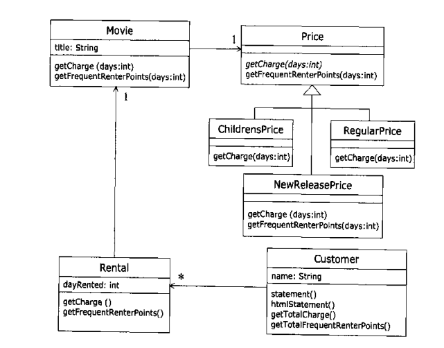

码农真得很辛苦，每天除了要下地编码之外，还需要挑灯夜战，学习专业知识，唉。不抱怨了，抱怨都是那些自暴自弃的人愤世嫉俗的。最近看《重构》一书，话说是一本很多人推荐看的好书，封面上还写着“从初级程序员到编程高手的秘籍”。好吧，我承认是初级程序员。所以我看了。
第一章
与其他书不同，第一章是一个例子。很多书，包括大学教材啊，技术教材都是以要讲的内容的定义和一些学习的重要意义之类的做第一章，而此书却给了一个系统的小部分代码来做重构的小例子。这样写的原因作者说了，不过对于我们这种应试教育下出生的人来说有点小小的不习惯。
public String statement() {
double totalAmount = 0; //总消费余额
int frequentRenterPoints = 0; //常客积点
Enumeration rentals = _rentals.elements();
String result = "Rental Record for " + getName() + "\n";
while(rentals.hasMoreElements()) {
double thisAmount = 0;
//取得一笔租借记录
Rental each = (Rental) rentals.nextElement();
//determine amounts for each line
switch(each.getDaysRented() > 2) { //取得影片租价格
case Movie.REGULAR: //普通片
thisAmount += 2;
if (each.getDaysRented() > 2)
thisAmount += (each.getDaysRented() - 2)*1.5;
break;
case Movie.NEW_RELEASE: //新片
thisAmount += each.getDaysRented() * 3;
break;
case Movie.CHILDRENS: //儿童片
thisAmount += 1.5;
if (each.getDaysRented() > 3)
thisAmount += (each.getDaysRented() - 3)*1.5;
break;
}
// add frequent renter points（累加 常客积点）
frequentRenterPoints++;
// add bonus for a two day new release rental
if (each.getMovie().getPriceCoe() == Movie.NEW_RELEASE &&
each.getDaysRented() > 1)
frequentRenterPoints++;
// show figures for this rental （显示此笔租借数据）
result += "\t" + each.getMovie().getTitle() + "\t" +
String.valueOf(thisAmunt) + "\n";
// add foot lines （结尾打印）
result += "Amount owed is " + String.valueOf(totalAmount)
+ "\n";
result += "You earned " +
String.valueOf(frequentRenterPoints)
+ " frequent renter points";
return result;
}
}
例子很简单，一个电影光碟出租店的简单系统，这里的部分是打印租碟的用户的费用和积分。书内的这个小例子真的很小很简单，简直就是一个 java 初学者写的课后实践题。如果换成我（好歹有工作经验）去写，估计也还是写成这个样子：按现实中的几个主体建立几个类——电影碟、顾客、租赁，然后在其中一个类里面写一个打印出某一次租赁的费用和积分的方法，这个方法没什么层次什么的，就一个完整的面向过程的代码。不光我，估计还多有一定经验的都会这么写，因为这个实在太简单，简单到都懒得过多思考。作者也怎么认为，不过他要读者把这样的代码放到更高的高度去看，放到一个庞大系统中去看。的确，不易于理解（逻辑判断多，循环内的逻辑太长），不符合面向对象精神（一个过程，全部塞一个方法里面，也不深究到底哪些实现该属于那个类）。
之后作者就开始慢慢的，一步一步的重构这段代码。不多说了，那些都是看一眼就能懂的，这些重构的方法大部分为我们开发中常用的。不过神奇的事发生了——至少我是这么认为的，一段简陋的代码在作者折腾下，开始慢慢变得有模有样，层次清楚，功能分明，最后还给程序加上了一个状态模式，竟然和高深的设计模式搭上边了。

这个小小的例子，把读者悄悄的领入了重构的世界，用简单的例子，把重构的神秘面纱给剥去（至少不会让人望而生畏）。
第二章
何谓重构，对它熟悉后估计理解都不用，作者说了两个概念，动词和名词，意思都差不多，无法就是通过调整软件内部的结构来达到想要的样子。
重构（名词）：对软件内部结构的一种调整，目的是不改变『软件之可察行为』前提下，提高其可理解性，降低其修改成本。
重构（动词）：使用一系列重构准则（手法），在不改变『软件之可察行为』前提下，调整其结构。
一、为何重构
改进软件设计：不管开始的时候设计是多么好的一个软件，随着越来越多的修改，之前的设计也会被埋在代码堆里面。重构能够整理之前的设计，甚至改变原来设计不足的地方。
使用软件更易被理解：代码总会给其他开发人员看或是浏览其他开发人员的代码，甚至自己回头看自己以前的代码。做开发的都有这样的经历，看别人的代码，不是一般的头疼。为了大家，为了项目，我们应该重构代码，使其容易理解。在看别人代码的时候，重构之，也可以加快自己对代码的理解。我以前都是傻呼呼的看别人的垃圾代码，一直在抱怨，可是从来没动手重构过。看了这个后，回去试试了，发现的确理解代码逻辑的速度快乐好多。个人觉得糟糕的代码不是看不都，只是我们大脑无法记住那复杂的东西（大脑堆栈不够用），而那些优秀的代码，从代码的结构上就开始帮助阅读者理解。
帮助找BUG：这个个人感觉可以参考上面那条。容易看懂程序，自然容易发现 BUG。
提高变成速度：单从光写代码角度来看，按业务写一篇代码是最快的，为了重构，一个对重构不熟练的我，需要多话三分之一的时间在重构上。不过随着需求的变化等，会发现那些大段不知所云的代码的确十分影响进度，而且很难修改或是加入好的设计。
二、合适重构
三次法则：用我初中语文老师的话，好事不过三，更何况坏事，要一而再再而三的忍受无法入目的代码，也是一种本事。
添加功能时重构：很容易理解，无非就是需要改动这块代码或是需要再次用到这块代码的时候。
修补错误时重构：同上
复审代码时重构：即在代码review时对有问题的代码进行重构。review可能是自己对自己代码的复审，也可能是别人的代码的复审。
Kent Beck的 Why refactoring works中说的比较贴切，大部分时间我们只知道现在要做什么，而很难预知未来需要做什么，这样我们无法为未来留下更多的余地。所以，等到明天变今天的时候我们去重构，以求容易修改。
三、怎么向经理说？
是个很严重的问题，不过是个情商活，我就不多说了，借口千千万万，一个就足够。这里作者介绍了 Kent Beck 关于中间层的论述，我没搞懂，感觉理解很别扭（我阅读能力太差了吧），有时间看了英语原文在补上。
四、重构的难题
数据库重构： 我现在就遇到这个问题，做数据库表结构的重新设计和数据的迁移时，真的无从下手啊，经验少了点，唉。作者说在对象模型和数据库模型中间加入个分隔层。没试验过，作者也没说怎么实现，难道像 hibernate 那样。
修改接口：万恶的 EJB ，对远程调用提供接口，害的我都没法改接口。作者说的保留原接口，实现新接口的方法是个中庸之道，在无法同步修改的情况下，这个方法很好。原来的旧接口直接用适配模式或是装饰模式，用新的接口实现老接口的功能。
难以通过重构来改动的设计模式：系统的大范围模式变动，估计不是重构能办得到的。
五、何时不该重构
作者之说了在赶进度的时候（恐怕这个时间在项目开发中占大部分），其他未知。
六、重构和设计
这个部分主要将了过度的预先设计和完全不进行预先设计两个极端的存在。过度的预先设计，最求在动手写代码前为整个系统包括未来的扩展和变化都设计好；完全不进行预先设计则是上来就动手写代码，随遇而安，后期在整理设计。
低级程序员就是浑浑噩噩写程序；进阶了，发现设计很重要，就开始拼命的实现做完美的设计（我现在就这个阶段，悲哀，被一语道破啊）。作者的观点就是要预先设计，但不能过度，开发也要不断重构。结合上面的“今天要做什么”和“明天要做什么”，个人觉得是先要为当前的做设计，等后面的变动过来后，在做合理的变动（包括重构和修改原有设计）。 Ron Jeffries 提供的例子很好的说明了空谈主义的悲剧。
七、重构和性能
一句话，对于那些对性能要求不是很苛刻的系统，其他都是先编码 + 重构，完了在整个系统统一优化性能。